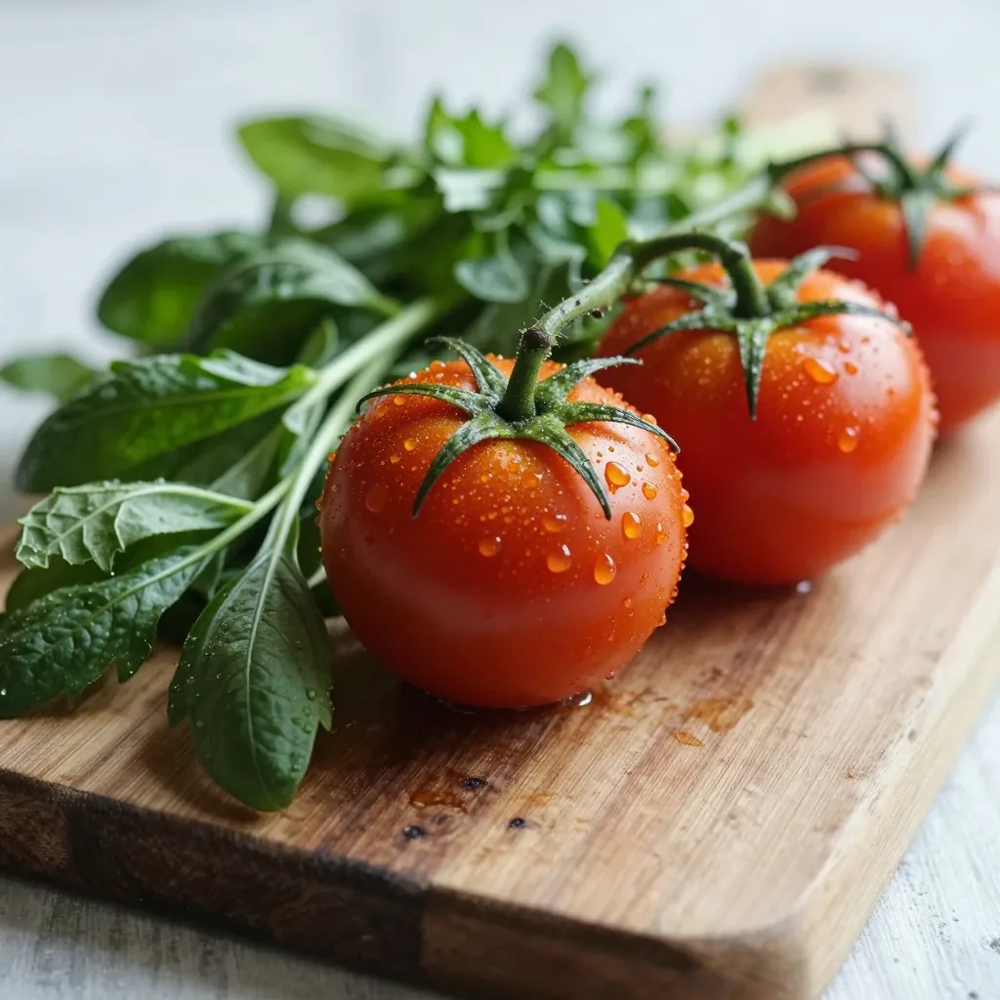
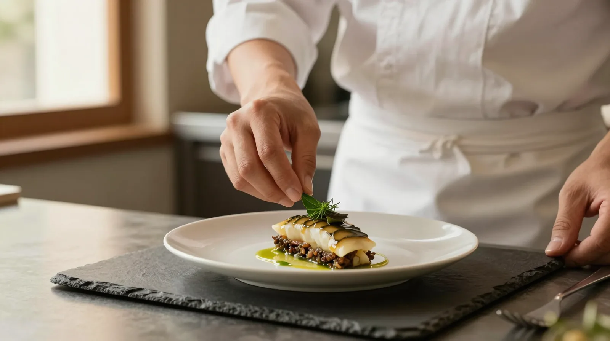
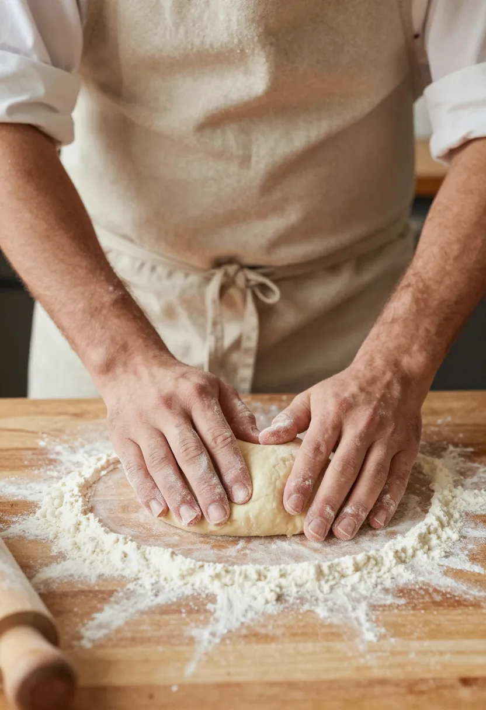
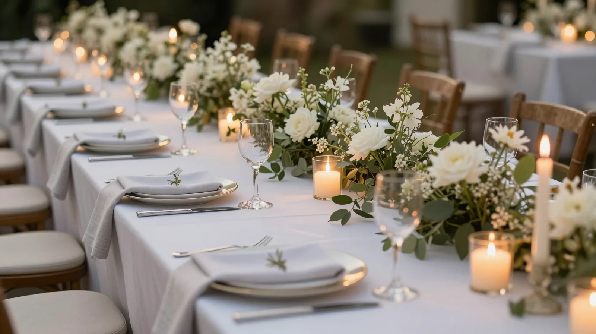
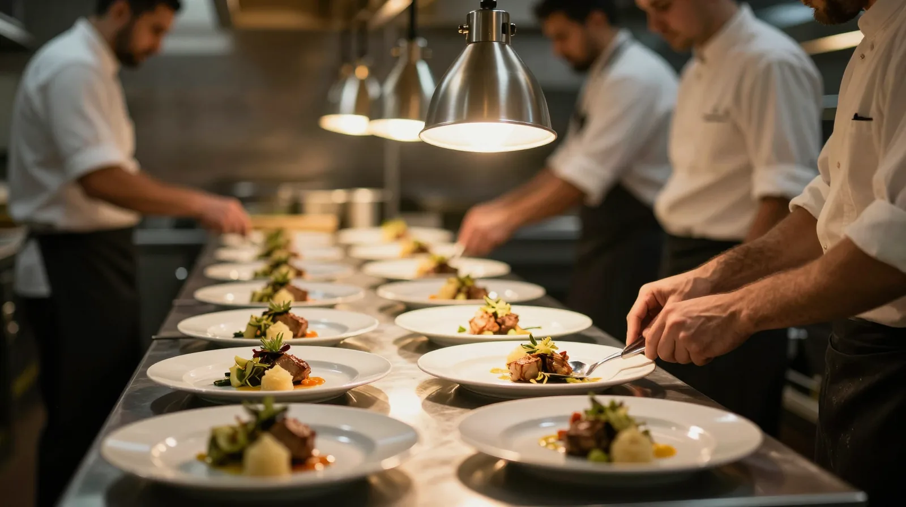
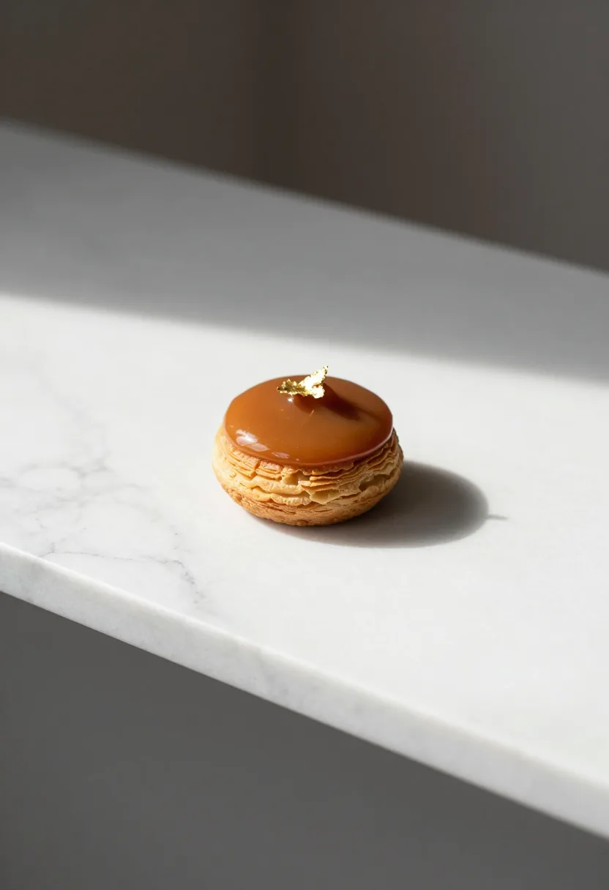
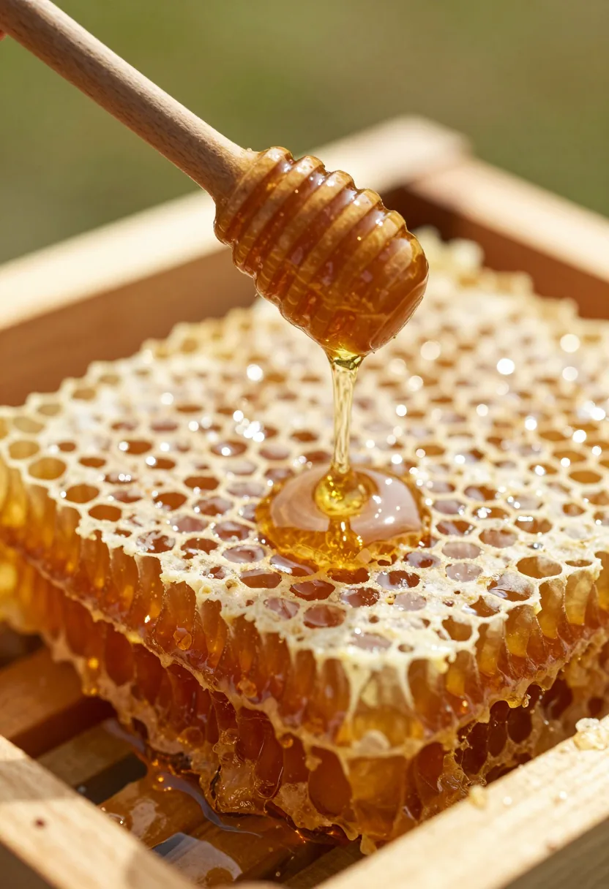

01ToprakBaşlangıç
Mevsim yeşilleri, yerli domates, zeytinyağı ve taze otlar.

İyi mutfak; hijyen, düzen ve malzemeye saygıyla başlar. Sonra misafirin hatırladığı kısım gelir: sıcaklık, ritim ve tabakta bir hikâye.

Önce ellerMerhaba, ben Ümit. Mutfak Sanatları okudum (modern mutfak, hijyen, pastacılık, uluslararası mutfaklar). Mutfağa gelmeden önce barista ve vardiya liderliği yaptım, lojistik süpervizörlüğü ve bitmiş ürün kalite kontrol deneyimi edindim — bu yüzden her sofraya düzen ve özen taşırım. Aynı zamanda Redna Hub'ın kurucusuyum.
Modern mutfak, hijyen, pastacılık ve uluslararası mutfaklar.
Hızlı ve tutarlı servis, ekip ritmi, müşteri ilişkisi.
Yoğun bir operasyonda planlama, akış ve düzen.
Kalite disiplini ve titiz kontrol.
Ayrıca arıcılık ve futbol scoutluk kursları.




“Lüks değil. Özen.”
Ümit Kavi · çalışma ilkesiMisafirinize göre tasarlanan menüler; 10 kişiden yüzlere.
+Küçük, samimi sofralar; her servis için bir hikâye.
+Etkinlik ve ofisler için espresso barı.
+Küçük işletmeler için menü akışı, hijyen ve iş düzeni.
+Müsaitliği görün, bütçenizi hesaplayın, Ümit'in asistanıyla konuşun — hepsi bu sayfada. (Yerel işletmeler için kurduğumuz araçların çalışan demosu.)